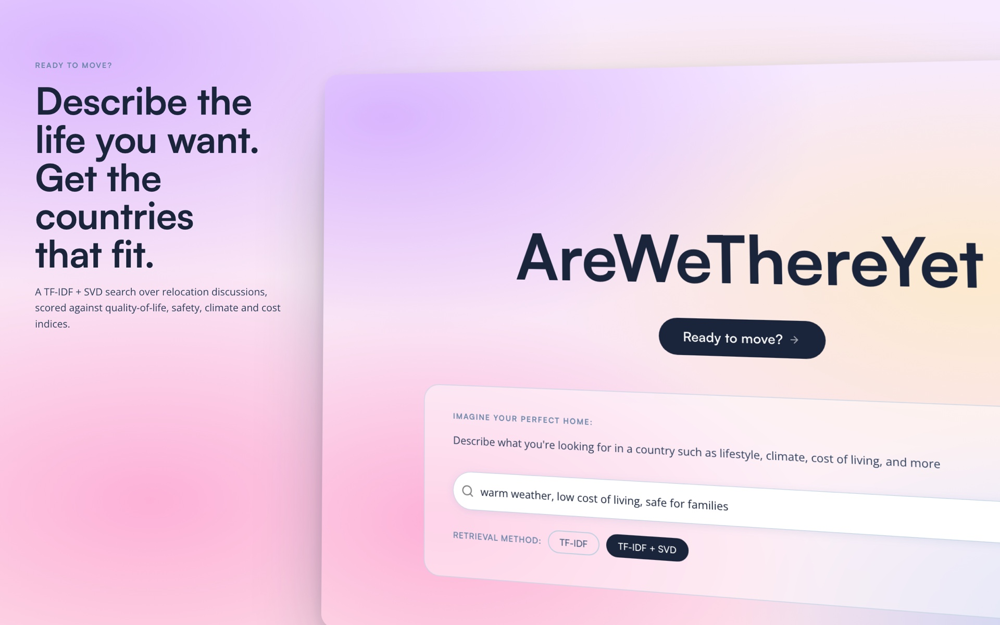
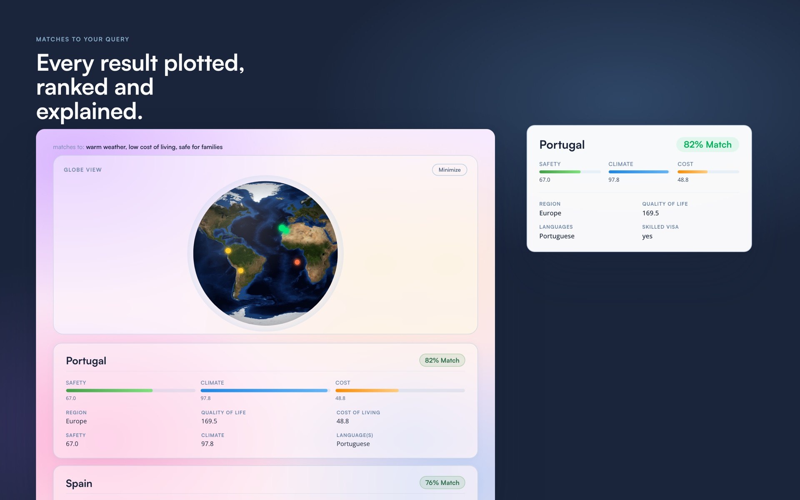
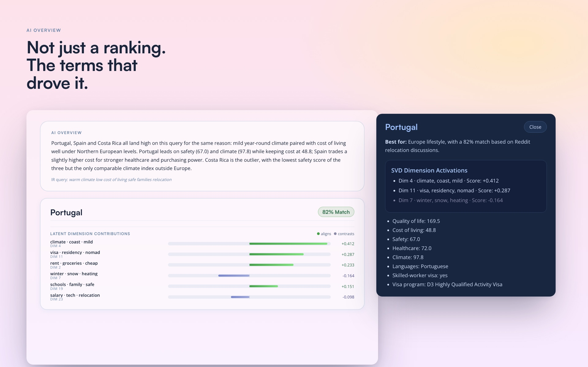

Are We There Yet?
-
Role
Team of five, backend search
Year
Spring 2026
-
Goal
Find countries that match your lifestyle and vibe, not just your visa requirements
Context
Cornell INFO 4300 class project
-
Stack
Flask, React, TypeScript, SQLite, scikit-learn, OpenAI API, Vite
Link
Description
An NLP-powered country recommendation engine. It takes a plain-language query, something like "warm, cheap, good food, slow pace", and returns ranked country matches using TF-IDF cosine similarity over profiles built from Reddit posts and structured metadata.
Overview
Most tools for picking a country to move to answer a question nobody asked first. They start with visa tiers and tax brackets, when the real question is closer to "where would I actually like living?" Are We There Yet takes that question in the words people use to ask it and turns it into a ranked list.
Each country gets a profile assembled from expat and travel posts on Reddit alongside structured metadata, vectorized with TF-IDF and reduced with SVD. A query is scored against those profiles by cosine similarity. An optional LLM layer rewrites the query first, expanding vague or colloquial phrasing into terms the index can actually match, and the result view shows which latent dimensions pushed each country up or down so the ranking can be argued with.
- TF-IDF vectorizer with SVD dimensionality reduction over country profiles built from Reddit expat and travel posts
- LLM query rewriting through the OpenAI API, expanding vague input into richer search terms
- Synonym expansion and intent anchoring for common lifestyle terms
- Interactive 3D globe visualization of the results
- A latent dimension chart showing which semantic dimensions drove each ranking
- Flask REST API over SQLite, served alongside a Vite and React frontend

Role & process
One of five. I owned the backend search engine and the API, and also worked on the frontend result display.
- Built the country profiles: scraping and assembling Reddit expat and travel posts into one document per country, then merging in structured metadata
- Built the TF-IDF index and the SVD analysis behind the ranking
- Wrote the query expansion pipeline, including synonym expansion, intent anchoring, and the OpenAI rewriting layer
- Built the Flask REST API over SQLite that the frontend queries
- Contributed the result display and the latent dimension visualization on the frontend

Goals
It shipped on the Cornell INFO 4300 showcase. What it was aiming at:
- Return meaningful country matches from free-text lifestyle queries
- Make the ranking explainable rather than a black box
- Beat a naive keyword search baseline on retrieval quality